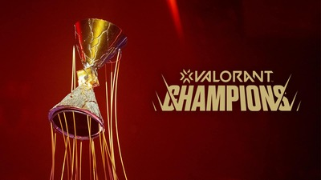

¿Qué son los esports?
Los esports son competiciones que se desarrollan dentro del ámbito de los videojuegos y que han llegado a alcanzar un nivel muy alto en cuanto a popularidad en la industria del entretenimiento. Su nombre viene de electronic sports, es decir, deportes electrónicos.
Para que un videojuego sea considerado como un esport debe estar diseñado para que 2 o más jugadores se enfrenten, aunque por lo general este tipo de juegos suelen ser de equipo.
Valorant
Valorant es un juego de disparos en primera persona desarrollado por Riot Games con 2 equipos de 5 personas en el que un equipo debe plantar una bomba llamada “spike” y el otro equipo debe evitarlo o desactivarla a tiempo en el caso de que llegue a plantarse. A mitad de la partida los equipos cambian de lado, los atacantes pasan a ser defensores y viceversa.
Es un gran ejemplo de esport, desde la salida de su fase beta el 7 de abril de 2020 y posteriormente la entrega final el 2 de junio del mismo año se veía su gran potencial como deporte electrónico, el cual siguió mejorando hasta que en 2022 ganó el premio a mejor esport del año, destronando a League of Legends, juego creado por la misma compañía y que llevaba en la cima de los esports desde hacía años.
Agentes
Para darle variedad al juego y que no sean todas las partidas iguales hay una variedad de personajes llamados “agentes”, cada uno con sus habilidades únicas y agrupados en 4 categorías diferenciadas.
- Duelistas: Es la clase más popular del juego y sus habilidades están centradas en conseguir asesinatos.
- Iniciadores: Como indica su nombre, sus habilidades suelen estar enfocadas en dar utilidad al comienzo de la ronda, bien revelando las posiciones enemigas o deshabilitándoles para que les sea más difícil defender.
- Centinelas: Sus habilidades se usan para defender zonas específicas del mapa dificultando que los enemigos entren a la zona que tienen vigilada.
- Controladores: Se dedican a bloquear con humos la visión de los enemigos para poder tener una ventaja sobre el terreno.
Mapas
Hay un total de 9 mapas en el juego, cada uno con sus peculiaridades y tamaño característicos, sin embargo, no están todos activados a la hora de buscar una partida, para los modos de juego competitivos hay una rotación de mapas en la que solo hay activados 7 a la vez, los cuales cambian cada cierto tiempo.

Armas
En cada ronda, los jugadores pueden escoger entre una amplia variedad de armas, entre las cuales se encuentran pistolas, subfusiles, escopetas, etc. Cada una para un estilo de juego en específico.
Estas armas tienen, además, rediseños comprables por dinero real en los cuales cambian los sonidos de disparo, animaciones de recarga y algunos incluso tienen una animación especial al matar al último enemigo, estos rediseños, también llamados “skins” no dan ninguna ventaja a nivel competitivo, pero son más bien algo centrado en la personalización.